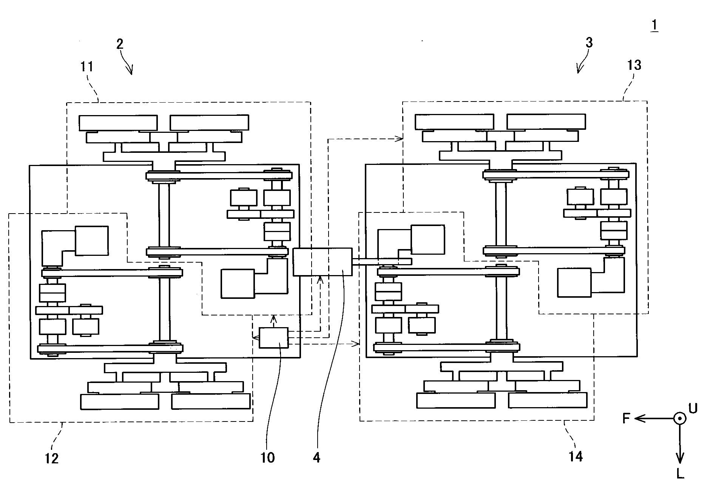

階段昇降機構

低摩擦環境下でも確実に階段を昇降できることを目指して，8 輪の機構を新たに設計・試作し，実機実験により蹴上150 mm 踏面320 mm の階段を昇降できることを実証した．
Publications
- 出尾隆志, 高畑智之, “電動車両,” 特許第7339229号. (Registerd on 5 September 2023)
- 高畑智之, 原田達也, “低摩擦環境での利用を目指した階段昇降機構,” 第40回日本ロボット学会学術講演会 (RSJ2022), 4H1-02, 2022.